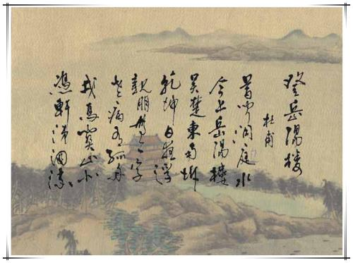
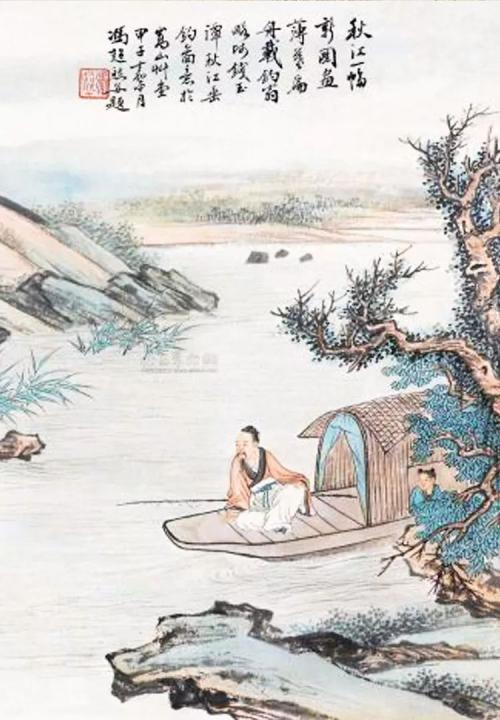
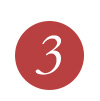
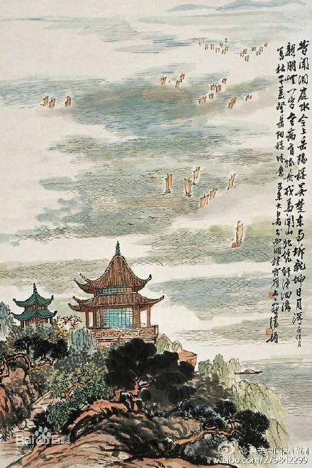
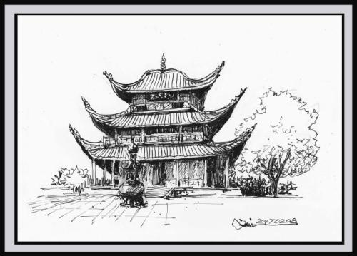

岳阳：处洞庭之沃野，在九镇之中央。奉尧命斩巴蛇，因后羿号初。得天岳之灵居，故美称曰岳阳。壮伟楼以临湖，改晋邑名独享。

岳阳古称巴陵、又名岳州，为湖南省辖地级市、第二大经济体，长江中游城市群重要成员，湖南省域副中心城市。建城始于公元前505年，是一座有着2500多年悠久历史的文化名城。位于江南洞庭湖之滨，依长江、纳三湘四水，江湖交汇，不仅是中国南北东西交通要道、国务院首批沿江开放之重地，且是长江中游重要的区域中心城市、湖南首位门户城市
岳阳交通极为便利，境内长江、京广铁路、蒙华铁路（在建）、京广高铁、京港澳高速公路、杭瑞高速公路等国家交通主动脉在市区交织成网。2015年12月10日新开建的岳阳三荷机场，也促进着该市形成愈加明显的“水陆空”三位一体综合性大交通脉络。
岳阳综合经济实力位居中部六省大中城市前列，2016年地区生产总值3123亿元、社会零售品消费总额1142.88亿元、财政收入330.8亿元，稳居全省第二，仅次于省会长沙。
岳阳是湖南唯一的国际贸易口岸城市，也是中国著名的港口城市。岳阳港是长江沿岸的中转型国际集装箱大港、国务院批准的启运港，并与港澳台、日韩、东盟、澳大利亚等地区、国家有定期海运直达航线和远洋接力航线，设有国家综合保税区。
岳阳人文深厚、风景秀丽，集名山、名水、名楼、名人、名文于一体，是中华文化重要的始源地之一，亦是海内外闻名的旅游胜地。2014年岳阳获评中国最具幸福感和最具文化软实力之城，是全国唯一获取两项殊荣的地级市。2015年，岳阳荣膺“中国十大活力休闲城市”。2017年岳阳连续保留“全国文明城市”荣誉。
岳阳交通极为便利，境内长江、京广铁路、蒙华铁路（在建）、京广高铁、京港澳高速公路、杭瑞高速公路等国家交通主动脉在市区交织成网。2015年12月10日新开建的岳阳三荷机场，也促进着该市形成愈加明显的“水陆空”三位一体综合性大交通脉络。
岳阳综合经济实力位居中部六省大中城市前列，2016年地区生产总值3123亿元、社会零售品消费总额1142.88亿元、财政收入330.8亿元，稳居全省第二，仅次于省会长沙。
岳阳是湖南唯一的国际贸易口岸城市，也是中国著名的港口城市。岳阳港是长江沿岸的中转型国际集装箱大港、国务院批准的启运港，并与港澳台、日韩、东盟、澳大利亚等地区、国家有定期海运直达航线和远洋接力航线，设有国家综合保税区。
岳阳人文深厚、风景秀丽，集名山、名水、名楼、名人、名文于一体，是中华文化重要的始源地之一，亦是海内外闻名的旅游胜地。2014年岳阳获评中国最具幸福感和最具文化软实力之城，是全国唯一获取两项殊荣的地级市。2015年，岳阳荣膺“中国十大活力休闲城市”。2017年岳阳连续保留“全国文明城市”荣誉。
地理位置:
经济概况
2017年，全年国内生产总值3258.03亿元，总量居全省第二，比上年增长7.0%，高于全国平均水平0.1个百分点。其中，第一产业增加值362.35亿元，增长3.6%；第二产业增加值1424.93亿元，增长5.3%；第三产业增加值1470.75亿元，增长10.1%。第一产业增加值占国内生产总值的比重为11.1%，第二产业增加值比重为43.8%，第三产业增加值比重为45.1%。全市三次产业结构比调整为11.1:43.8:45.1，产业结构首次转化为三、二、一，服务业成为岳阳经济新的主导力量。
全年城镇新增就业5.49万人。年末城镇登记失业率为3.48%。失业人员再就业2.78万人。
全年居民消费价格（CPI）比上年上涨1.3%。商品零售价格（RPI）比上年上涨0.7%。工业生产者出厂价格（PPI）比上年上涨1.8%。
全年全市公共财政预算收入318.09亿元，比上年减少12.66亿元，下降3.8%，其中税收收入243.44亿元，减少3.81亿元，下降1.5%。地方公共财政预算收入152.14亿元，比上年增加0.1亿元，增长0.1%，其中税收收入78.94亿元，增加8.65亿元，增长12.3%。
2017年， 全部金融机构本外币各项存款余额2600.17亿元，比上年增长19.4%。其中住户存款1440.56亿元，增长14%；非金融企业存款661.61亿元，增长36.5%；广义政府存款493.43亿元，增长15.9%。全部金融机构本外币各项贷款余额1318.28亿元，增长28.7%。其中短期贷款354.07亿元，增长6.7%；中长期贷款951.88亿元，增长40.7%。
全年固定资产投资2633.55亿元，比上年增长13.6%。其中，第一产业投资113.86亿元，增长6.7 %；第二产业投资953.61亿元，增长3.0 %；第三产业投资1566.08亿元，增长21.9 %。民间固定资产投资1309.18亿元，增长1.8 %，占固定资产投资的比重为49.7%。
全年城镇新增就业5.49万人。年末城镇登记失业率为3.48%。失业人员再就业2.78万人。
全年居民消费价格（CPI）比上年上涨1.3%。商品零售价格（RPI）比上年上涨0.7%。工业生产者出厂价格（PPI）比上年上涨1.8%。
全年全市公共财政预算收入318.09亿元，比上年减少12.66亿元，下降3.8%，其中税收收入243.44亿元，减少3.81亿元，下降1.5%。地方公共财政预算收入152.14亿元，比上年增加0.1亿元，增长0.1%，其中税收收入78.94亿元，增加8.65亿元，增长12.3%。
2017年， 全部金融机构本外币各项存款余额2600.17亿元，比上年增长19.4%。其中住户存款1440.56亿元，增长14%；非金融企业存款661.61亿元，增长36.5%；广义政府存款493.43亿元，增长15.9%。全部金融机构本外币各项贷款余额1318.28亿元，增长28.7%。其中短期贷款354.07亿元，增长6.7%；中长期贷款951.88亿元，增长40.7%。
全年固定资产投资2633.55亿元，比上年增长13.6%。其中，第一产业投资113.86亿元，增长6.7 %；第二产业投资953.61亿元，增长3.0 %；第三产业投资1566.08亿元，增长21.9 %。民间固定资产投资1309.18亿元，增长1.8 %，占固定资产投资的比重为49.7%。
岳阳 —— 一座历史悠久的文化古城
有关岳阳的诗词：
-
- 
- 《登岳阳楼》 唐 杜甫： 昔闻洞庭水，今上岳阳楼。 吴楚东南坼，乾坤日夜浮。 亲朋无一字，老病有孤舟。 戎马关山北，凭轩涕泗流。
-
- 
- 《望洞庭湖赠张丞相》 唐 孟浩然： 八月湖水平，涵虚混太清。 气蒸云梦泽，波撼岳阳城。 欲济无舟楫，端居耻圣明。 坐观垂钓者，徒有羡鱼情
-
-  
- 《与夏十二登岳阳楼》 唐 李白： 楼观岳阳尽，川迥洞庭开。 雁引愁心去，山衔好月来。 云间连下榻，天上接行杯。 醉后凉风起，吹人舞袖回。。
-
- 
- 《岳阳楼》 明·杨基： 春色醉巴陵，阑干落洞庭。 水吞三楚白，山接九疑青。 空阔鱼龙气，婵娟帝子灵。 何人夜吹笛，风急雨冥冥